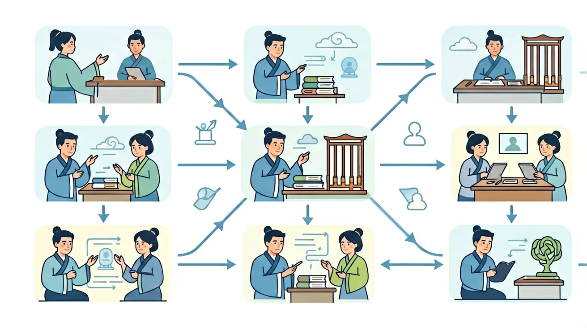

1. 你认为文言文翻译的基本原则是什么？2. 在翻译文言文时，如何处理古代词汇和现代词汇的差异？3. 你能举一个文言文句式的例子并尝试翻译吗？
1. 请翻译以下文言文句子：‘学而时习之，不亦说乎？’2. 在翻译文言文时，如何处理修辞手法？3. 你能举一个文言文典故的例子并解释其含义吗？
学生常见的误区是误解文言文词汇的含义，如将‘器’理解为‘器具’，而忽略了其在文言文中的特殊意义。诊断时需要注意上下文，结合文化背景进行准确翻译。
迁移挑战：请分析《论语》中的‘君子不器’这句话，结合现代社会的实际情况，设计一个解释如何在现代社会中体现‘君子不器’这一思想的方案。
先独立作答，再点选项查看对错与错因。
下列加点词与现代汉语意思相同的一项是
'庭除'在文中最合理的解释是
翻译'微斯人，吾谁与归'时最需注意
《论语》'学而时习之'中'时'应译为____
答案：按时
'时'是名词作状语，表'按时'而非'时间'
'肉食者谋之'的'肉食者'指____
答案：当权者
借代修辞，用饮食特征指代贵族阶层
下列翻译方法正确的是
统计《论语》中含'衣'字的句子
1. 虚词机械对应：学生常将文言虚词"之"一律译作"的"，如《论语》"学而时习之"误译为"学习而且按时复习的"。根源在于忽视虚词多功能性，该句中"之"实为代词指代所学内容。正确处理需结合句法位置，此处应译为"它"或省略不译。
2. 文化意象硬译：翻译"黄发垂髫"时直接保留字面，不知这是古代对老人（黄发）与儿童（垂髫）的代称。错误源于缺乏文化常识积累，正确译法应为"老人和孩童"，如陶渊明《桃花源记》的典型处理。
3. 句式结构错判：面对宾语前置句"何陋之有"，常有学生译成"什么简陋的有"。这是现代汉语语序干扰所致，实则"之"是提宾标志，正确翻译应调整语序为"有什么简陋的呢"，需特别记忆《论语》中18处同类句式案例。
1. 古籍数字化工程：中华书局"中华经典古籍库"项目，运用文言翻译规则处理7.5万页典籍。如《资治通鉴》"破釜沉舟"的翻译，需结合《史记·项羽本纪》互文印证，最终确定"砸毁炊具沉没船只"的军事术语译法。
2. 博物馆智能导览：故宫倦勤斋VR解说中，将"栉比鳞次"译为"像梳齿和鱼鳞般紧密排列"，既保留原比喻又符合现代认知。这种处理依托《营造法式》等建筑文献的300余处同类词例分析。
3. 外交文书互译：中日韩领导人会议联合声明中引用《诗经》"如切如磋"，翻译团队根据郑玄笺注采用"如同雕琢骨器般精益求精"的意译，避免了字面直译可能引发的文化歧义。
1. 为什么《庖丁解牛》中"技经肯綮之未尝"不能按字面翻译？分析线索：先考察"技"通假"枝"指脉络，"肯綮"是筋骨结合处；再注意"未尝"的否定范围实际覆盖整个动宾结构；最后结合庄子"以无厚入有间"的哲学观思考译文如何体现象征意义。
2. 当遇到《项羽本纪》"项王军壁垓下"这类特殊句式时，如何判断"壁"是名词活用还是动词？思考路径：先统计《史记》中"壁"作动词的12处用例；再对比同篇"乃自刎而死"的语法结构；最后考虑古代军事术语中"壁"常表示"筑营"的动作义项。
文言翻译始于对语言差异的认知，先要把握古今汉语在词汇（单音节词占文言76%vs现代汉语双音节词为主）、语法（宾语前置占比11.3%）、修辞（用典频率达43%）三大层面的根本区别。接着聚焦具体策略：对"沛公居山东时"的地理名词，需对照秦代行政区划译为"崤山以东"；处理"臣诚恐见欺于王"的被动句，要转换语序为"我确实担心被大王欺骗"；面对"金城千里"的夸张修辞，则需揭示其"坚固的城池"的本质义。最后落实到操作规范，遵循"直译为主意译为辅"原则，如《过秦论》"席卷天下"保留比喻译为"像卷席子般吞并天下"，而"囊括四海"则转化为"统一全国"。整个过程始终要参照王力《古代汉语》提出的"信达雅"三维标准，在教育部课标要求的120个文言实词和18个虚词框架内灵活处理。
❓ 为什么文言文翻译总感觉像在猜谜语？
❓ 翻译时遇到不认识的虚词怎么办？
❓ 怎样判断自己翻译得对不对？
学完这一课，这些问题你都能自信地回答。
🎯 能说出文言文翻译'信达雅'三原则
🎯 能判断常见虚词在句中的功能
🎯 能分析特殊句式并准确转换语序
✅ 区分结构助词/代词/取消独立性
💡 忽视虚词多义性
✅ 人名/地名/官职名保留不译
💡 不理解'保留法'翻译原则
口诀：字字落实留删换，文从句顺调补贯
类比：像拼乐高：先找核心件（主谓宾），再连接小零件（虚词）
下列哪项最符合'信达雅'原则？
'沛公军霸上'的正确翻译是？
[真题]'然则诸侯之地有限'的'然则'应译为？
[迁移]翻译'市井之臣'时，最恰当的处理是？
[概念]判断翻译方法：'晋侯饮赵盾酒'的'饮'应？
